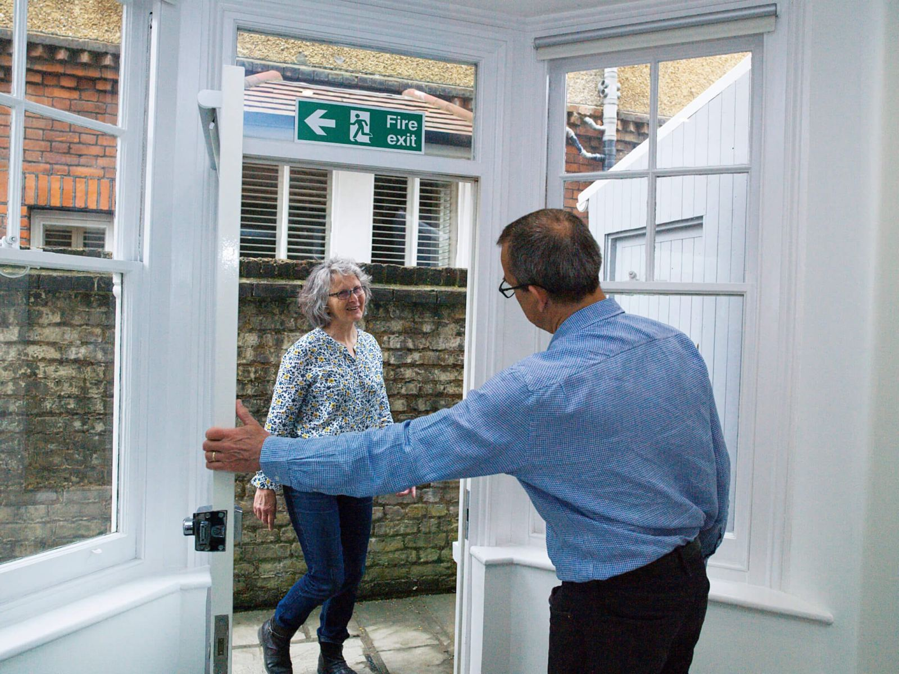

Contact Us

Not sure whether your feet need professional foot care?
We can quickly discuss over the phone whether you need an appointment or whether you can simply treat your foot complaint yourself.
Connect with Us
We are very busy - please call us
or book online.
These are the quickest ways
to book your appointment
Send us a message but..
Please note - we are now open on Fridays
Phone: 0208 546 9626
Email: office@kingstonfeet.com
Address: kingstonfeet, 196 Richmond Road, Kingston upon Thames, KT2 5HE